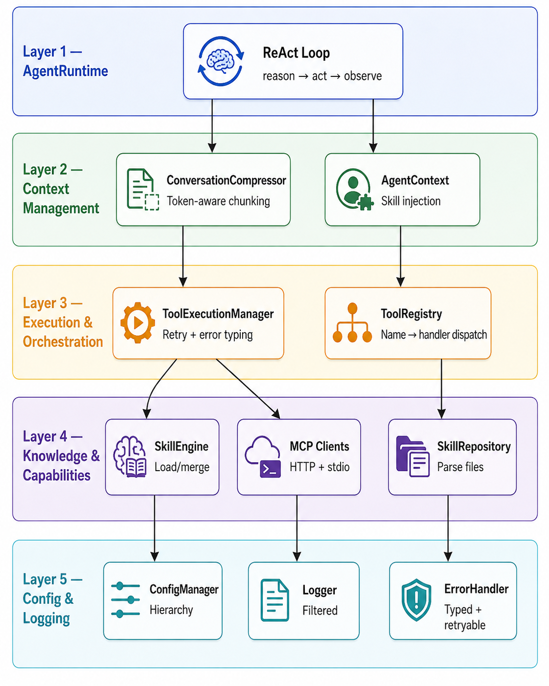

C++ Framework for LLM Agent Development
Most AI agents are built in Python or TypeScript. Both are excellent languages. Both have real limitations for production agent systems. Understanding where they shine — and where they don't — is the starting point for this framework.
Python: The AI Ecosystem Default
Python dominates AI/ML for good reason. LangChain, CrewAI, LlamaIndex, AutoGen, and DSPy are all Python-native. PyTorch and Hugging Face have no TypeScript equivalent. If you're training models, running retrieval pipelines, or iterating on agent behavior in notebooks, Python is the right choice. The library depth is unmatched, and the research community publishes Python code first.
But Python has structural costs. The Global Interpreter Lock limits true parallelism — even with Python 3.13's experimental free-threading, most production environments are still GIL-bound. Object allocation and garbage collection add memory overhead: Python agent frameworks consume 2-5 MB per session, compared to sub-KB in systems languages. And environment management (venv, conda, pip version conflicts) is a real tax on small teams shipping fast.
TypeScript: The Full-Stack Contender
TypeScript has become the language of product-embedded agents. Vercel AI SDK, LangChain.js, and Mastra have matured rapidly. An estimated 60-70% of Y Combinator's Winter 2025 AI startups built agents in TypeScript — primarily because small teams can own the entire stack (frontend, API, AI middleware) in one language with shared types. Compile-time type safety catches malformed tool-call schemas before they reach production. Node.js's non-blocking event loop handles streaming and real-time UX natively, with lower cold starts on serverless platforms.
The gap: TypeScript's AI/ML library depth lags Python by 12-18 months. There is no equivalent to Hugging Face Transformers, PyTorch, or the deep RAG tooling ecosystem. Multi-agent collaboration frameworks (CrewAI, AutoGen) are Python-native. If your agent needs local model inference, custom embeddings, or fine-tuning, you'll end up calling a Python service anyway.
C++: The Production Control Layer
C++ is not a replacement for Python or TypeScript. It occupies a different layer entirely. Where Python excels at rapid iteration and TypeScript at full-stack cohesion, C++ provides deterministic control over the agent runtime — no garbage collector pausing mid-tool-call, no GIL serializing parallel execution, no interpreter overhead adding milliseconds to every dispatch.
Benchmark data makes this concrete: C++ agent runtimes achieve ~0.8 KB memory per session versus 2-5 MB in Python frameworks. Scheduling overhead drops from ~50-100 microseconds to ~300 nanoseconds. At 100 concurrent agents, peak RSS stays under 100 MB. These numbers matter when you're running thousands of agent sessions — not for a demo, but as a production service with SLA commitments.
The trade-off is real: steeper learning curve, longer development cycles, smaller ecosystem. The honest answer is that most teams should use Python or TypeScript for agent behavior. C++ belongs where the runtime itself is the bottleneck — production inference orchestration, edge deployment, latency-critical tool execution, or multi-tenant platforms where per-session memory directly drives infrastructure cost.
Why This Framework Exists
ai-sdk-ext is a C++20 framework for building autonomous LLM agents. It is not a wrapper around a Python runtime. It is a from-scratch systems-level approach to agent orchestration — designed for low latency, predictable resource usage, and production deployment without dependency chains. It sits alongside Python and TypeScript agent stacks, not against them — providing the runtime control layer that those languages cannot.
The Three Hard Problems in Agent Design
Building a chatbot is easy. Building an autonomous agent that reliably uses tools, manages its own context, and doesn't spin into infinite loops is a systems engineering problem. Here are the three challenges that matter.
1. Context Windows Are Finite. Conversations Are Not.
Every LLM has a token limit. Agent conversations grow with every user message, every tool result, and every intermediate reasoning step. Naive truncation is dangerous — cutting the wrong message can lose a critical database schema or a constraint the user stated five turns ago.
The non-obvious insight: tool messages must never be compressed. They contain structured data — query results, schema definitions, error messages — that the model needs verbatim to reason correctly. Chat messages can be summarized. Tool results cannot.
The framework solves this with ConversationCompressor
and TokenEstimator. The compressor walks the full message
history, estimates tokens per message using a zero-dependency
character-walk heuristic (~0.35 tokens/char for English), and applies
a chunking algorithm that summarizes older chat messages while passing
tool results through untouched. Recent context is always kept
verbatim.
This is not a nice-to-have. Without it, agents silently lose critical context and produce confidently wrong answers.
2. Tool Calls Fail. Agents Must Not.
LLMs emit non-deterministic tool calls. A tool might timeout, return a transient error, or simply not exist. Without explicit bounds, an agent can loop forever retrying the same failing call, or crash on the first error.
The framework addresses this at two levels:
- ToolExecutionManager wraps every tool call with
structured error handling. Errors carry an
ErrorCodeenum and aretryableflag — the manager decides whether to retry with exponential backoff (configurable viaRetryPolicy) without parsing error strings. This is the difference between "try/catch everything" and "let the error type drive control flow." - AgentRuntime enforces a hard
max_iterationscap on the ReAct loop. The agent reasons, acts, observes — but never more than N times. When the cap is hit, the runtime returns the best available answer with a clear signal that the loop exhausted.
The result: deterministic termination. The agent always finishes. It always produces output. It never hangs.
3. Integrations Must Be Pluggable, Not Permanent
Agent systems talk to model providers (OpenAI, Anthropic, local inference servers), MCP servers (ClickHouse, databases, APIs), and tool backends. Hard-coupling to one provider makes the system fragile. Hard-coupling to all of them makes it unmaintainable.
The framework uses abstract interfaces at every integration boundary:
ModelClientis a pure virtual class. The host application injects the implementation. The framework assembles context but never calls the model directly. This is deliberate — it keeps the library self-contained, testable without API keys, and provider-agnostic.IMCPClientsupports both HTTP (for cloud MCP servers) and stdio (for local processes). The transport is selected at runtime via configuration, not compile-time flags. Adding a new transport means implementing one interface — not rewriting the agent loop.ToolHandleris astd::function<std::string(const std::string&)>. Tools are registered by name and dispatched by string key. No virtual inheritance, no template metaprogramming — just a map from names to functions.- Skills are declarative JSON/YAML files dropped into
a
skills/directory. They define instructions, tool schemas, and code templates. No recompilation needed to add capabilities. TheSkillRepositoryparses them at runtime, theSkillEngineactivates them, and theAgentContextinjects their instructions into the model's system prompt.
The Architecture: Five Layers, One Loop
The framework is organized into five layers with clear dependency boundaries. Dependencies flow downward — upper layers call lower layers, never the reverse.

Key design patterns at work:
- Strategy Pattern —
IMCPClientlets the transport layer (HTTP vs stdio) be swapped at runtime without touching the agent loop. The rest of the system doesn't know or care how MCP calls are delivered. - Registry Pattern —
ToolRegistrymaps tool names to handler functions. Tools are registered from skill definitions, then dispatched by string key during the agent loop. This decouples tool declaration from tool execution. - Chain of Responsibility —
ToolExecutionManagerapplies a pipeline: validate input JSON → dispatch to handler → catch structured errors → decide retry based on error type → return typedToolResult. Each stage is independently testable. - Hierarchical Configuration —
ConfigManagerresolves settings through a three-level merge: model-specific → provider-level → global defaults. Environment variables are interpolated at read time via{VAR_NAME}syntax. One config file drives the entire system. - Declarative Plugin System — Skills are data, not code. A YAML file defines what tools exist, what instructions the model receives, and what code templates are available. The framework loads and activates them without recompilation.
What This Demonstrates
- Deterministic agent loops with bounded iterations — no infinite recursion, no runaway costs
- Token-aware conversation compression — tool results preserved verbatim, chat history summarized
- Declarative skills — add capabilities by dropping a YAML file, zero redeployment
- Structured error handling with semantic error types and retry semantics — not try/catch spaghetti
- Provider-agnostic model integration — swap OpenAI, Anthropic, or a local model by implementing one pure virtual class
- Minimal footprint — single CMake build, two
runtime dependencies (
nlohmann_json,yaml-cpp), C++20, no Python, no virtualenv, no runtime dependency tree
The Bigger Picture
AI agent orchestration is not a machine learning problem. It is a systems engineering problem — managing state, bounding execution, handling failures gracefully, and composing external services into a reliable pipeline.
The industry is discovering this the hard way. Python agent frameworks work beautifully in demos and silently fall apart in production — GC pauses during tool execution, unbounded memory growth in long conversations, dependency conflicts between agent libraries and ML runtimes.
C++ gives you control over all of it. Not because it is faster — though it is — but because it forces you to think about resource ownership, error propagation, and interface boundaries at design time rather than debugging them at 3 AM.
ai-sdk-ext is my answer to that challenge. It is a framework built for the production reality of AI agents: unpredictable inputs, bounded resources, and zero tolerance for silent failures.
Built with C++20. Tested against NVIDIA NIM, OpenAI, and local inference servers. Designed to be embedded in larger systems or run standalone.
Repository: ai-sdk-ext | Design Docs: ai-sdk-ext-design/